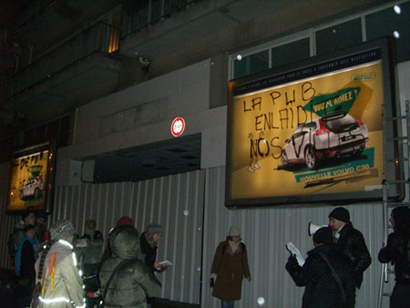

| |
Site dédié à la publication d'informations communiquées par le Collectif des déboulonneurs. En aucun cas ce site n'appelle à des actions illégales. | |
 |
||
|
Accueil du site > Lille > Compte rendu du déboulonnage du vendredi 26 janvier 2007 à Lille
Nous avons rendez-vous avec le public sous la Porte de Paris à 17h58. Le nombre de spectateurs est de 23 personnes au départ, au maximum nous serons 30. Les habitués sont au rendez-vous. Un seul média présent : un photographe du quotidien gratuit « Lille Plus ». Alessandro, au mégaphone, explique l’action et précise qu’elle se déroulera de façon non-violente. Nous faisons à pied les 100 mètres qui nous séparent du lieu du barbouillage, au carrefour de la rue de Paris et de la Place Jean-Baptiste Lebas. Pendant que Sylvia et Thomas barbouillent les 2 premiers panneaux Decaux, Guillaume parle au mégaphone du procès des déboulonneurs de Paris, du scandale des publicités pour l’eau cristalline et de la prise de position de l’Alliance pour la planète vis-à-vis notamment des publicités energivores. Ensuite, nous chantons la chanson du Barbouilleur sur l’air de Boris Vian. Sylvia et Thomas inscrivent « - de pub, + de poésie » et « la pub enlaidit nos villes ». On les applaudit. Les policiers arrivent en moto, Priscillia va au-devant d’eux pour leur expliquer l’opération. Deux autres policiers sont là en civil. Nous discutons avec eux. Tout se passe cordialement, ni vérification de papiers, ni visite du poste de police… Thomas prend donc l’échelle pour aller barbouiller le 3ème panneau Decaux, passant devant les policiers qui ne font aucun geste. Il inscrit « Tais-toi, consomme ». Pendant ce temps Guillaume, au mégaphone, nous annonce que les émetteurs de publicités destinées aux boîtes aux lettres seront taxés pour cofinancer le recyclage et l’autocollant « Stop Pub » n’est toujours pas reconnu. 
Jean marc annonce la création d’une association d’artistes plasticiens militants : CIRKOEIL cirkoeil(at)no-log.org qui participera aux actions des déboulonneurs de Lille. Applaudissements et remerciements aux barbouilleurs. L’action se termine, les spectateurs militants restent à discuter et une partie prend la direction d’un café militant du centre-ville pour aller boire un verre. |
|
Site utilisant SPIP - Hébergement Ouvaton
|